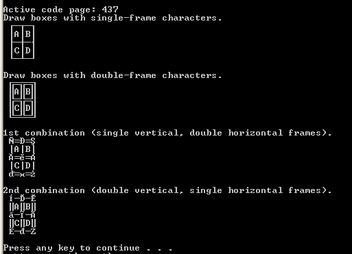
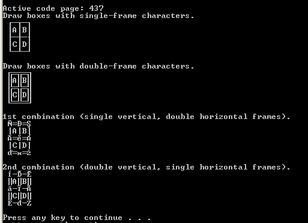

Search found 323 matches
- 26 Sep 2017 12:25
- Forum: DOS Batch Forum
- Topic: CONVERTCP.exe - Convert text from one code page to another
- Replies: 71
- Views: 20095
Re: CONVERTCP.exe - Convert text from one code page to another
@aGerman and @Dave: As Steffen wrote he made CONVERTCP for me - I had one old 16-bit 'pure' DOS .exe which I was using on an almost daily basis to do conversions between CP852 and CP1250 (and vice versa) - of course these 16-bit .exe files don't work on 64-bit architecture any more. Of course Steffe...
- 25 Aug 2017 09:29
- Forum: DOS Batch Forum
- Topic: join/append txt file from c:\mydir\
- Replies: 2
- Views: 540
Re: join/append txt file from c:\mydir\
in c:\mydir\ have 87 .txt files. i need via batch code, to append all lines from each .txt files in one big .txt file... How to? If they are in the correct order you can use this: copy *.txt new_file.txt (this new_file.txt will have an EOF character at the end of file) or copy /b *.txt a.a new_file...
- 22 Aug 2017 12:40
- Forum: DOS Batch Forum
- Topic: Colorful animation using VT100 - Pure batch WIN 10 only
- Replies: 7
- Views: 1314
Re: Colorful animation using VT100 - Pure batch WIN 10 only
... The result is just partially correct because my emulator have several bugs or incomplete sequences that I could not fix yet because I could not found an Ansy escape sequences table that describe the exact behavior when several sequences are combined (i.e. which sequences override previous ones?...
- 19 Jul 2017 07:19
- Forum: DOS Batch Forum
- Topic: How to display the choice /t timer?
- Replies: 15
- Views: 1607
Re: How to display the choice /t timer?
set chc=%~1 set cnt=%~2 set chk_chc=%~3 set timeovr=%~4 :timechc set msg="Please enter the number of your choice in %cnt% sec.: " if "%cnt%"=="0" (goto :%timeovr%) if not "%cnt%"=="0" choice /C !chc!0 /N /T 1 /D 0 /M %msg% if %ErrorLevel%==3 gotoxy ...
- 11 Jul 2017 04:52
- Forum: DOS Batch Forum
- Topic: How to display the choice /t timer?
- Replies: 15
- Views: 1607
Re: How to display the choice /t timer?
@miskox - I appreciate the effort, I had thought of the same method too before posting the question, but because of screen flicker I rejected it. If there's any way (or plugin) to get around the screen flicker then I'm interested Thanks, Of course there are methods to move cursor without flickering...
- 10 Jul 2017 06:59
- Forum: DOS Batch Forum
- Topic: How to display the choice /t timer?
- Replies: 15
- Views: 1607
Re: How to display the choice /t timer?
Maybe something like this: @echo off set /a cnt=30 :0 cls REM title %cnt% if not "%cnt%"=="0" choice /C YNT /N /T 1 /D T /M "Please choose Y or N in %cnt% sec.: " set errlev=%errorlevel% if %errlev%==3 set /a cnt-=1&goto :0 echo Selected:%errlev% Of course some more...
- 28 May 2017 02:33
- Forum: DOS Batch Forum
- Topic: Move cursor to *any position* using just ECHO command
- Replies: 10
- Views: 4216
Re: Move cursor to *any position* using just ECHO command
Great work! Well, does not work for me. (XP PRO 32 bit) First: 'Enter line' line is not in the middle of the screen: 1 1 1 1 1 1 1 1 1 2 2 4 6 8 2 2 4 6 8 2 2 4 6 8 2 2 4 6 8 2 2 4 6 8 2 2 4 6 8 2 2 4 6 8 2 2 4 6 82 3 3 3 3 3 3 3 3 3 4 2 4 6 8 4 2 4 6 8 4 2 4 6 8 4 2 4 6 8 4 2 4 6 8 4 2 4 6 8 4 2 4 ...
- 19 Apr 2017 01:35
- Forum: DOS Batch Forum
- Topic: Delete blank lines not working
- Replies: 6
- Views: 1292
Re: Delete blank lines not working
thank you re deleting the 2.txt file - that was a mistake on my part the posted "solution" definitely removes empty lines but still preserves the last line as blank, so I am still trying to research this thing and figure out why will definitely post the solution if i find it too Aisha Thi...
- 18 Apr 2017 13:39
- Forum: DOS Batch Forum
- Topic: Delete blank lines not working
- Replies: 6
- Views: 1292
Re: Delete blank lines not working
Hello all, We have the following code for deleting blank lines in a TXT file, but it is failing to remove the blank lines - any advice? findstr /V /R /C:"^$" c:\salad\yarn\buzzard.txt >>c:\salad\yarn\buzzard2.txt del "c:\salad\yarn\buzzard2.txt" rename "c:\salad\yarn\buzzar...
- 21 Feb 2017 06:59
- Forum: DOS Batch Forum
- Topic: About FC /B - for very large files
- Replies: 9
- Views: 2198
Re: About FC /B - for very large files
Of course. Redirection to NUL would cause the FC command to complete faster than displaying everything to the screen or writing to a file.
Saso
Saso
- 21 Feb 2017 05:22
- Forum: DOS Batch Forum
- Topic: Combine csv problem
- Replies: 32
- Views: 3858
Re: Combine csv problem
Is it possible that the MORE command displays -- More (3%) -- prompt after the page is full? Maybe you can answer with pressing the SPACE key (or Q to quit and it should finish immediately I guess). Help for more: If extended features are enabled, the following commands are accepted at the -- More -...
- 21 Feb 2017 04:37
- Forum: DOS Batch Forum
- Topic: About FC /B - for very large files
- Replies: 9
- Views: 2198
Re: About FC /B - for very large files
One way would be to redirect output to NUL C:\fc /b file1.exe file2.exe>nul if ERRORLEVEL returns 1 there is a mismatch. Also if file sizes are not the same ERRORLEVEL is 1. Another way would be using a 3rd party software: for example md5.exe or similar and then you can compare these MD5 hashes. Saso
- 09 Feb 2017 06:43
- Forum: DOS Batch Forum
- Topic: Box-drawing characters in batch files...?
- Replies: 25
- Views: 10402
Re: Box-drawing characters in batch files...?
Steffen: you were correct: I changed the font and now it is ok.
Saso
Saso
- 07 Feb 2017 13:47
- Forum: DOS Batch Forum
- Topic: Box-drawing characters in batch files...?
- Replies: 25
- Views: 10402
Re: Box-drawing characters in batch files...?
Steffen: your example is displayed like this.

(I added CHCP command to show current CP)
Saso

(I added CHCP command to show current CP)
Saso
- 07 Feb 2017 13:43
- Forum: DOS Batch Forum
- Topic: Box-drawing characters in batch files...?
- Replies: 25
- Views: 10402
Re: Box-drawing characters in batch files...?
Thank you Steffen for such a great explanation on Code Pages! Your idea for displaying these characters under different Code Pages is great. (but your example does not work for me). Currently (because my .cmd is in use only by me) I am using this: I have this in an ANSI .txt file: 218 196 194 196 19...